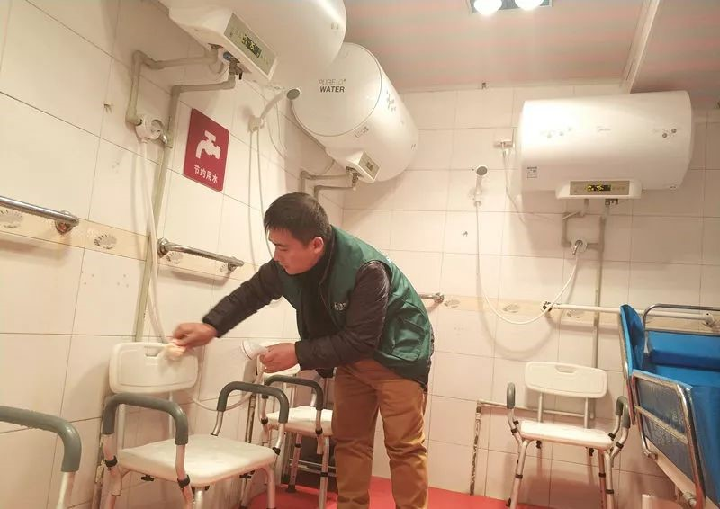
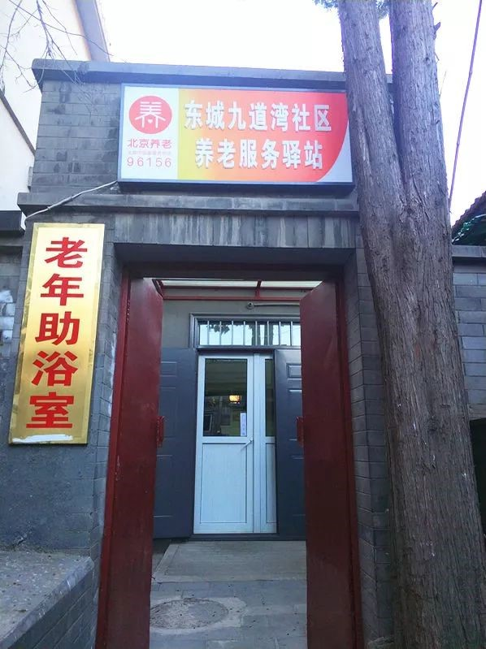
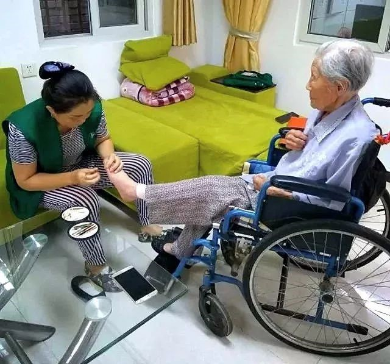
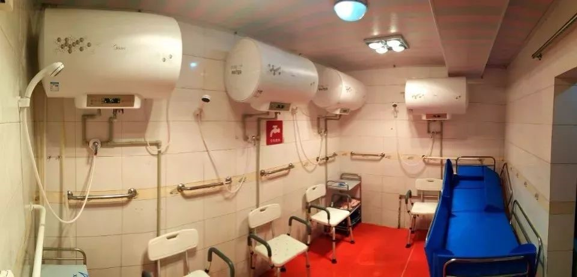
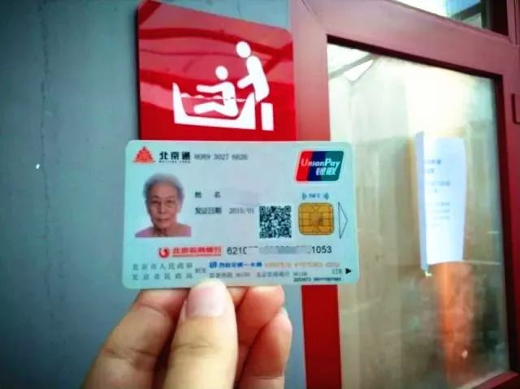
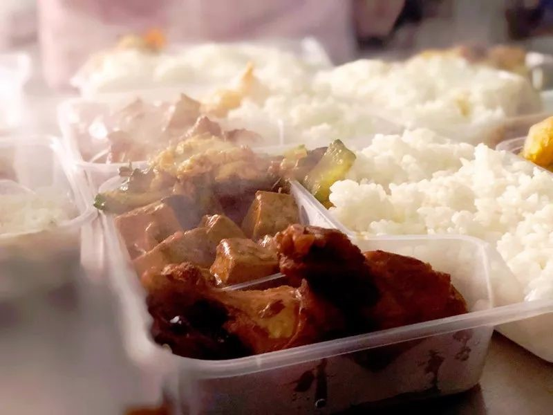
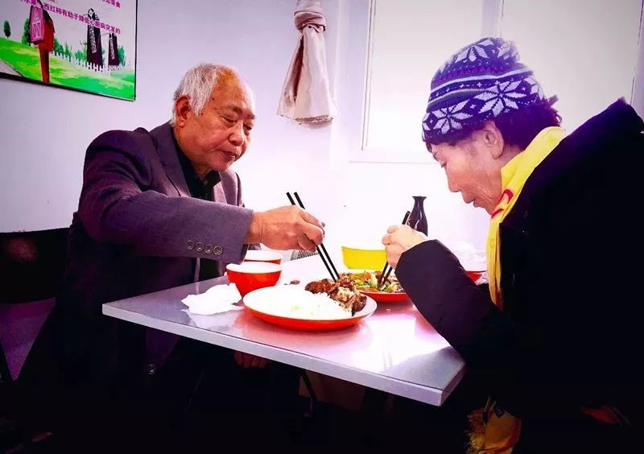

胡同里建起助浴室，家门口搬来小餐桌，这里的居家养老真暖心！
来源：北京东城
洗澡难
冬日气温低，洗澡成了住在平房区老人的难题。
吃饭难
腿脚不便，儿女不在身边，老年人吃饭有难处。
随着老年化社会进程的加快，居家养老已成为老人们最主要的养老方式。据了解，北新桥街道老龄化突出：60岁以上的老年人有15597人，占街道总人口的18%。其中，80岁以上的高龄老人有3793人，空巢老人有1377人，80岁以上的中、重度失能老人有209人。
“我们在开展居家养老需求调查时，两个方面比较集中，一是洗澡问题，一是用餐问题。”北新桥街道办事处副主任闫灵介绍。为了让辖区的老人们在冬天洗上个热乎乎的澡，让老人不出远门就能吃到可口的饭菜，北新桥街道推出了老年助浴、老年餐桌服务。
胡同里有了老年浴室
冬天洗澡难困扰住在平房区的老年人。北新桥街道响应居民呼声，在九道湾社区建起老年浴室，配备助浴椅、助浴床等专业设施，还提供上门服务，周边四个平房社区直接受益。
轻便安全的助浴椅、专用的助浴床、干净整洁的换衣间，在助浴室里，几件新式的助浴器具，让前来洗澡的老人们大呼“舒服”。
“洗浴设备很贴心，环境干净整洁。以往在家洗容易着凉，现在来这里既方便又洗得舒服，心里感觉特别高兴。”78岁的李大爷平时在平房独自居住，听说街道有助浴服务后就第一个预约登记，率先尝鲜体验了一把。
老年浴室位于九道湾中巷3号，面积120平方米。走进浴室，暖气、休息椅、更衣柜等设施一应俱全，洗发水、沐浴露、脱鞋、毛巾都可以免费使用，地面还铺着防滑砖，墙上装有扶手。和普通浴室不同，这里的淋浴水龙头下面，摆着一排白色助浴椅，对面还有一张蓝色的助浴床。
由于行动不便，冬天的“洗澡难”一直困扰着不少老人。老人们表示，冬天在家洗澡，地方小、保暖效果不好，容易感冒。如果到公共浴室去洗澡，人多空气也不好，又怕摔跤没人管。为了解决冬天老人洗澡难，街道经过多次与运营商北京三替养老服务有限公司洽谈协商，初步形成街道解决 “洗澡难”问题的为老服务模式：通过“一问（问健康情况）、一助（亲属及助浴员）、一消（消毒措施及时到位）”等方式开展助浴服务。
助浴价格实行普惠制，健康的老年人自己来洗澡，每人每次10元；中、重度失能老人需要助浴服务的，每人每次60元；需要上门服务的，每人每次150元；需要带浴床上门的，每人每次220元。
“就配送”服务解决老人“吃饭难”
中午11点30分，东城区炮局胡同甲56号中飘出阵阵饭菜的香气。炮局胡同中住了多年的老居民马云和老伴早早进了56号的大门，对着一块写满字的白板研究了起来。“家常土豆丝4块、番茄菜花4块、木须肉6块，再来份米饭吧。”研究完白板上的菜谱，老两口向着一溜餐盘前身穿白色制服的厨师报出了自己点的菜名，厨师热心地提醒：“您不来份粥啊？汤和粥都是免费的。”在北新桥街道这间100平方米的“养老照料中心”，老年餐桌开餐了。
老两口将饭菜端到折叠餐桌上摆好，马云算起帐来：“一荤两素，加上主食，俩人吃顿中午饭一共16块钱。”拿筷子夹起尝一口，“牙不好，这菜挺软和，咬得动。”
闫灵告诉记者，老年餐桌的饭既可以堂食，还能外卖，荤素自选，行动不便的老人可以上门送餐，每天来这里就餐的大约有200人。“专门请营养老师给老人进行的配餐，力求适合老年人的口味，担心老年人牙口不好，还特意把菜炖得软烂一些。”
今年，北新桥街道养老照料中心向区域内老年人提供助餐服务。运营商引进专业餐饮人员，通过“养老照料中心+中央厨房+就餐配餐送餐”等方式，开展“就配送”服务。随着社区“老年餐桌”的成立，街道辖区内符合条件的老年人只需凭相关证件来社区进行就餐登记、办理就餐卡，就可以到“老年餐桌”用餐了。现在已为700多位60岁以上老人办理了老年人就餐卡。
接下来，“老年餐桌”还计划开展“下厨房”服务。闫灵解释说，将邀请大厨走进居民家中，不管是过生日还是年夜饭，都可以请大厨在居民家中完成。
下一步，北新桥街道将在海运仓附近再建一个面积600平方米的精品养老驿站，老年浴室和老年餐桌都能容纳，实现辖区12个社区居家养老服务全覆盖。